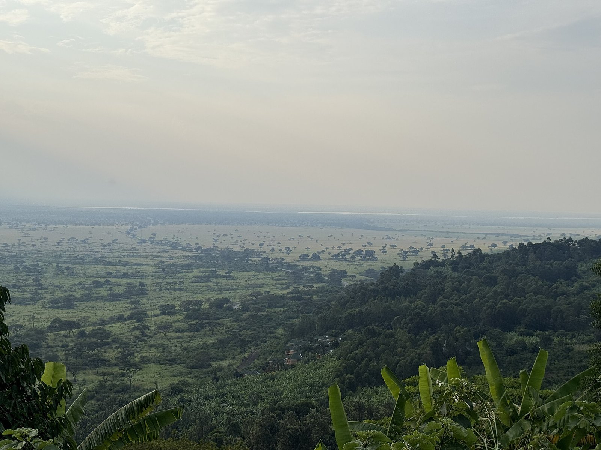

Photograph: Varied Landscape of Rubirizi Near Queen Elizabeth National Park, Uganda by NANTUMBWEJ, via Wikimedia Commons, CC BY-SA 4.0
Uganda's Ebola all-clear was not an event. It was a queue, and Friday was the first name off it.
The World Health Organization closed Uganda's outbreak on 26 August. The United Arab Emirates lifted its entry curbs on 26 September. Washington's suspension order was renewed on 11 September and still lists a country with no cases. For East African operators the lesson is that clearance is not declared, it is negotiated, one government at a time.
On Friday, Kampala finally got the answer it had been chasing since the start of June. The United Arab Emirates, which on 6 June had stopped issuing new visas to Ugandan nationals and told anyone travelling from Uganda to prove they had spent 21 days somewhere else first, said the measures were being eased. Adonia Ayebare, who had been working the file for Uganda, described the exchange without ornament. "His Highness informed me of the decision to lift travel restrictions on Uganda, subject to a delegation of UAE visiting the Uganda Civil Aviation Authority and other entities to assess preparedness," he said. Emirati precautions against the Democratic Republic of Congo and South Sudan stay in force.
The announcement matters, but the date matters more. The World Health Organization declared Uganda's Ebola outbreak over on 26 August, after 42 days without a new case, against a final total of 20 confirmed infections, two deaths and 18 recoveries. Uganda's own health ministry had declared local transmission ended a month before that, on 28 July. So the gap between the moment Uganda's epidemiological file closed and the moment its single most important aviation and labour corridor reopened was exactly one month. The gap between the health ministry's declaration and Friday was two.
That interval, not the outbreak, is the commercial story, and it is the one every hotel and lodge owner in the region should be reading. A country does not get cleared once. It gets cleared repeatedly, by different governments, working from different instruments, on clocks that have nothing to do with each other and very little to do with case counts. The all-clear is not an event. It is a queue, and until Friday nobody had moved.
Uganda now has a number for what the queue costs. The Uganda Civil Aviation Authority's August traffic report, released on 18 September, recorded 169,706 international passengers through Entebbe. That is 8.5 per cent better than July's 156,342, which is the recovery everyone wanted to see. It is also 29.1 per cent below the 239,329 passengers the airport handled in August 2025, a shortfall of 69,623 people in the strongest travel month of the year. Arrivals were 88,270 against 81,436 departures. KLM, which suspended its Entebbe service during the outbreak, had still not returned.
August was a month in which Uganda recorded no Ebola case and held a WHO all-clear from the 26th. The traffic gap is therefore not the price of an outbreak. It is the price of a label, and the label was still attached.
Set that against the same month on the other side of the region. Zanzibar recorded 124,481 international arrivals in August, an all-time monthly record, up around 18 per cent year on year. Same region, same month, same very large outbreak in the Democratic Republic of Congo next door. One destination was named in other governments' live instruments. The other was not. Nothing epidemiological separated them.
The reason the month passed the way it did is that "travel restrictions" is a plural noun pretending to be a singular one. Uganda was carrying at least four distinct constraints, each held by a different authority.
The heaviest is American and it is not an advisory at all. The US Centers for Disease Control and Prevention operates an order suspending the entry of foreign nationals who have been physically present in the DRC, Uganda or South Sudan in the previous 21 days. It was first issued on 18 May. It was reissued on 11 September, for a further 30 days, on the stated basis that the measure "is necessary to protect the health of the United States from the serious risk posed by the introduction of Ebola disease". That renewal came sixteen days after the WHO closed Uganda's outbreak, and it named Uganda anyway.
Alongside it sit the CDC's travel health notices, which as of the agency's 23 September update placed Ituri and Nord-Kivu at Level 4, Haut-Uele and Tshopo at Level 3, and the rest of the DRC together with Uganda at Level 2. And above both sits the State Department's country advisory, which in early August was still at Level 4, Do Not Travel, for Uganda, the DRC and South Sudan. "Our Travel Advisory for the DRC, as well as those for Uganda and South Sudan, remains at Level 4," the department said then, a week after Uganda had declared transmission over. Tommy Pigott, its spokesman, framed the logic as containment at source: "From the outset, our objective has been clear: Protect Americans, contain the outbreak at its source, and support affected countries."
Each of those instruments has its own trigger, its own review cycle and its own author. An operator watching for "the restrictions to lift" is watching a thing that does not exist. What exists is a set of locks, and the keys are held in different buildings.
Kampala's objection has been consistent and it is worth taking seriously, because it is an argument about the unit of analysis rather than about the science. Dr Jean Kaseya, director-general of Africa CDC, put it at its sharpest. "We don't need double standards. And as an African leader, I clearly say no double standard. If there is no travel restriction to France, there is no travel restriction to Uganda." The comparison is not rhetorical: the WHO's own case tally for this outbreak includes one case in France.
Uganda's health minister, Dr Chris Baryomunsi, was blunter still. "The US Canada, UAE, who put travel restrictions, that decision is not backed by science from those figures. It's out of fear." Dr Diana Atwine, the health ministry's permanent secretary, made the ask directly on the day the WHO declaration landed. "Unless they have other reasons, they should definitely lift the restrictions off the country, and Ugandans should be free to travel to any country."
The WHO's formal position supports them. In its 10 September update on the outbreak the organisation repeated that it "advises against any restriction of travel to, or trade with, affected countries".
None of which means the restricting governments are acting on nothing. The DRC outbreak is the second largest on record and it is still running. The WHO's 10 September figures put it at 6,757 confirmed cases and 3,267 deaths, a case fatality ratio of 48.3 per cent, across six provinces and 61 health zones. By 15 September the count had reached 7,258 cases and 3,510 deaths. "The epidemic continues to grow and continues to kill," Dr Tedros Adhanom Ghebreyesus said on 16 September, while allowing that cooperation had improved.
So the honest description of what is happening is not that rich governments are inventing a risk. It is that they are managing a genuine sub-national emergency with a country-level tool, and country-level tools cannot distinguish between Ituri and Rubirizi. Shaun Stanley, founder of Stanley Safaris, made the point early in the outbreak and it has aged well. "Africa is not a single place, and an outbreak in a remote province of the DRC is no more a reason to cancel a gorilla trek in Rwanda than an outbreak in one part of Europe would be a reason to cancel a trip to another. Context is everything."
Rwanda is the clearest illustration. It was moved to Level 3, Reconsider Travel, on 19 May, on the strength of geography rather than a case of its own.
The operators felt the instruments before the statisticians measured them. Lydia Eva Mpanga of Nkuringo Bwindi Lodge described the mechanism in June: "Travellers are cancelling and some are postponing because of the travel advisories." Isaac Kato, vice-president of the Uganda Tourism Association, reported that "several tourism bookings have been cancelled, some events have been postponed and hotel occupancy rates have dropped sharply", while noting the fact that never quite travelled as fast: "No cases have been traced to tourists visiting Uganda's attractions, hotels, conferences or tourism events."
Jean Byamugisha, chief executive of the Uganda Hotel Owners Association, called the restrictions "uncalled-for" and asked why Uganda alone among the DRC's neighbours had collected every level of advisory. The airlines followed the paperwork rather than the epidemiology. KLM, flydubai and Air Arabia withdrew; Emirates kept flying but, as Olive Lumonya, the aviation authority's deputy director general, put it, "they are more or less taking in only transit passengers, not people who are coming in from Uganda". Her second remark is the one to keep: "It is coming in at a time when we are under pressure to create confidence and trust in Uganda."
The practical conclusion is not that operators should lobby harder. It is that they should stop treating clearance as a date and start treating it as a schedule.
Three things follow. First, a property's real risk register is not a list of diseases or conflicts. It is a list of the live legal instruments in other countries that name yours, with the authority that holds each one and the date it next comes up for review. Uganda's was four items long in August, and knowing that would have told a Ugandan lodge that the WHO declaration bought it no immediate volume from North America.
Second, the lag is forecastable enough to budget. Uganda spent a month between clearance and its first major reopening, and its traffic is climbing at about 8.5 per cent a month from a 29 per cent hole, which puts August 2025's level four clean months away. That is a financial-year assumption, not a press release. Build the 2027 plan off the recovery curve rather than off the all-clear.
Third, the next decision point is already on the calendar. The American suspension order runs 30 days from 11 September, which means it lapses or renews around the middle of October. Friday proved that these instruments do come off. It also proved they come off one at a time, after a delegation visits, and in an order set by diplomacy.
The stakes are not marginal. Uganda's tourism ministry reported this week that the country drew 1.6 million visitors in 2025, earning UGX 5.8 trillion, about USD 1.62 billion, at an average of USD 986 a visitor over 8.8 nights, worth 5.9 per cent of GDP and supporting 876,000 jobs. Against that base, a single peak month running 29 per cent light is not a rounding error, and it was incurred with a clean bill of health in hand.
The uncomfortable lesson for Nairobi, Arusha, Kigali and Zanzibar is that none of this was earned or avoidable by good public health practice. Uganda did the epidemiology well: 20 cases, two deaths, a 42-day countdown completed without incident. It still lost a season, because clearance is not declared by the country that achieves it. It is granted, slowly, by everybody else.
📣 Telegram 💬 WhatsApp 💼 LinkedIn 📚 All guides